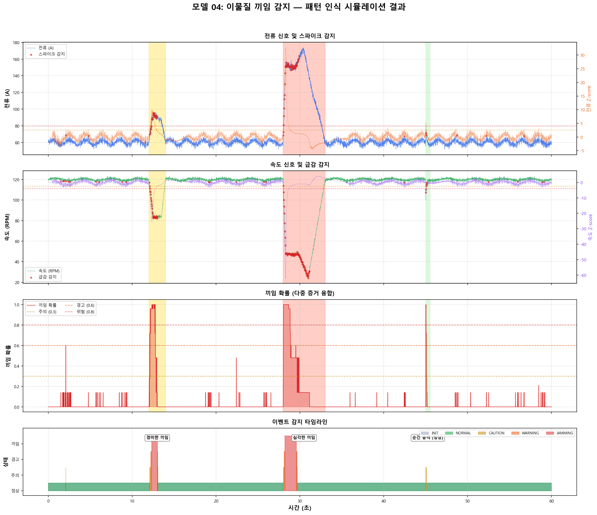

패턴 인식(Pattern Recognition)은 센서 데이터에서 미리 정의된 특정 패턴을 실시간으로 탐색하는 기법입니다. 이 모델에서는 딥러닝이 아닌 규칙 기반(Rule-based) + 통계적(Statistical) 접근 방식을 사용합니다.
도메인 전문가가 정의한 물리적 규칙
데이터 분포 기반 이상 탐지
| 용어 | 설명 | 본 모델 적용 |
|---|---|---|
| 슬라이딩 윈도우 | 최근 N개 데이터로 기준선을 계속 갱신 | 최근 3초(300 samples) 윈도우 |
| Z-score | (현재값 - 평균) / 표준편차 | 전류/속도 각각 Z-score 계산 |
| 변화율(Rate) | 단위 시간당 값의 변화량 | A/s, RPM/s 계산 |
| 증거 융합 | 다중 증거를 결합하여 최종 확률 산출 | 6개 증거의 가중합 |
| 상태 머신 | 감지 상태를 단계적으로 전이 | 정상→주의→경고→끼임 |
이축 전단 파쇄기에서 이물질(금속 덩어리, 과대 투입물 등)이 칼날 사이에 끼이면 다음과 같은 물리적 연쇄 반응이 발생합니다.
끼임이 발생하면 모터는 칼날을 돌리기 위해 더 많은 전류를 끌어옵니다.
| 상태 | 전류 (A) | 기준 대비 | 상승 속도 |
|---|---|---|---|
| 정상 운전 | 55~65 A | 1.0x (기준) | 안정 |
| 경미한 끼임 | 85~100 A | 1.5~1.7x | 200~300 A/s |
| 심각한 끼임 | 130~180 A | 2.2~3.0x | 500+ A/s |
| 모터 보호 한계 | 200 A | 3.3x | 즉시 차단 |
끼임으로 인한 부하 증가는 축 회전 속도를 급격히 떨어뜨립니다.
| 상태 | 속도 (RPM) | 기준 대비 | 감소 속도 |
|---|---|---|---|
| 정상 운전 | 117~123 RPM | 100% (기준) | 안정 |
| 경미한 끼임 | 80~90 RPM | 65~75% | -150~-200 RPM/s |
| 심각한 끼임 | 20~50 RPM | 17~42% | -300+ RPM/s |
| 완전 정지 | 0 RPM | 0% | 급정지 |
전류 급등과 속도 급감이 동시에(500ms 이내) 발생하는 것이 끼임의 결정적 증거입니다. 둘 중 하나만 발생하면 다른 원인(재료 투입, 부하 변동 등)일 가능성이 높습니다.
| 현상 | 전류 | 속도 | 지속 시간 | 판정 |
|---|---|---|---|---|
| 이물질 끼임 | ↑↑ (2x+) | ↓↓ (50%-) | 1~10초 | 끼임 |
| 재료 투입 충격 | ↑ (1.2x) | ↓ (90%) | 0.1~0.5초 | 정상 |
| 칼날 마모 | ↑ (서서히) | 유지 | 수일 | 정상 |
| 전원 변동 | 변동 | 변동 | 0.05~0.2초 | 정상 |
기준선(baseline)을 실시간으로 갱신하는 핵심 메커니즘입니다.
현재 값이 기준선에서 얼마나 떨어져 있는지를 표준편차 단위로 측정합니다.
| 감지 대상 | Z-score 주의 | Z-score 경보 | 의미 |
|---|---|---|---|
| 전류 스파이크 | ≥ 2.5σ | ≥ 4.0σ | 기준 대비 비정상적 상승 |
| 속도 급감 | ≤ -2.5σ | ≤ -4.0σ | 기준 대비 비정상적 하락 |
Z-score와 독립적으로, 절대적인 비율 변화도 확인합니다.
최근 50ms(5 samples) 동안의 값 변화 속도를 계산합니다.
| 감지 대상 | 주의 임계값 | 경보 임계값 |
|---|---|---|
| 전류 상승률 | ≥ 200 A/s | ≥ 500 A/s |
| 속도 감소율 | ≤ -150 RPM/s | ≤ -300 RPM/s |
단독 증거는 최대 0.4의 확률만 부여하며, 전류 스파이크 + 속도 급감이 동시에 감지될 때만 0.6 이상의 높은 확률이 산출됩니다.
전류 스파이크 감지 = True AND 속도 급감 감지 = True → 결합 보너스 x1.2 적용, 끼임 확률 최대 1.0
6개의 독립적인 증거를 가중합하여 최종 끼임 확률을 산출합니다.
| # | 증거 | 기여도 | 조건 |
|---|---|---|---|
| 1 | 전류 Z-score ≥ 경보 | +0.4 | Z ≥ 4.0σ |
| 2 | 전류 Z-score ≥ 주의 | +0.2 | 2.5σ ≤ Z < 4.0σ |
| 3 | 전류 비율 초과 | +0.2 | 현재 > 기준 × 1.5 |
| 4 | 전류 변화율 | +0.1~0.2 | ≥ 200 또는 500 A/s |
| 5 | 속도 Z-score ≤ 경보 | +0.4 | Z ≤ -4.0σ |
| 6 | 속도 Z-score ≤ 주의 | +0.2 | -4.0σ < Z ≤ -2.5σ |
| 7 | 속도 비율 미달 | +0.2 | 현재 < 기준 × 0.7 |
| 8 | 속도 변화율 | +0.1~0.2 | ≤ -150 또는 -300 RPM/s |
확률값을 누적 카운터로 변환하여 일시적 노이즈를 필터링합니다.
| 상태 | 조건 | 의미 | 색상 |
|---|---|---|---|
| NORMAL | jam_counter = 0 | 정상 운전 | 초록 |
| CAUTION | 0 < jam_counter < 10 | 주의 관찰 | 노랑 |
| WARNING | 10 ≤ jam_counter < 20 | 경고, 대비 | 주황 |
| JAMMING | jam_counter ≥ 20 | 끼임 확인, 즉시 조치 | 빨강 |
끼임 확인(JAMMING) 상태 진입 시, PLC를 통해 자동 대응 시퀀스가 실행됩니다.
| 상태 | 확률 범위 | 조치 | 자동/수동 |
|---|---|---|---|
| NORMAL | 0.0 ~ 0.3 | 정상 운전 유지 | - |
| CAUTION | 0.3 ~ 0.5 | 감시 강화, 로그 기록 | 자동 |
| WARNING | 0.5 ~ 0.7 | 투입 일시 중단, 감속 운전 | 자동 |
| JAMMING | 0.7 ~ 1.0 | 즉시 정지 → 역회전 시도 | 자동 |
| 항목 | 설정값 |
|---|---|
| 시뮬레이션 시간 | 60초 |
| 샘플링 간격 | 10ms (100Hz) |
| 총 샘플 수 | 6,000개 |
| 정상 전류 | 60A ± 2A |
| 정상 속도 | 120 RPM ± 0.8 RPM |
| 삽입 이벤트 | 3건 (경미/심각/순간충격) |
| # | 이벤트 | 시간 | 전류 피크 | 속도 최저 | 기대 결과 |
|---|---|---|---|---|---|
| 1 | 경미한 끼임 | 12~14초 | 90A (1.5x) | 84 RPM (70%) | WARNING |
| 2 | 심각한 끼임 | 28~33초 | 170A (2.8x) | 24 RPM (20%) | JAMMING |
| 3 | 순간 충격 (정상) | 45~45.5초 | 78A (1.3x) | 108 RPM (90%) | NORMAL |

도메인 전문가의 물리적 지식을 직접 규칙으로 인코딩. 학습 데이터 불필요.
10ms 주기로 입력, 5ms 미만으로 판정 완료. 임베디드 시스템에 최적.
모든 판정에 대해 "왜?"를 명확히 설명. Z-score, 비율, 변화율 수치 제공.
6개 독립 증거의 가중합으로 단일 지표 의존 위험 제거.
| 항목 | 패턴 인식 (본 모델) | LSTM / CNN | Random Forest |
|---|---|---|---|
| 추론 속도 | < 5ms | 10~50ms | 5~10ms |
| 학습 필요 | 불필요 | 수천 건 필요 | 수백 건 필요 |
| 해석 가능성 | 완전 | 제한적 | 중간 |
| 미지 패턴 | 불가 | 부분 가능 | 제한적 |
| 센서 드리프트 | 취약 | 적응 가능 | 중간 |
| 하드웨어 요구 | MCU 가능 | GPU 권장 | CPU 충분 |
| 끼임 감지 적합도 | 최적 | 과잉 | 적합 |
| 센서 ID | 유형 | 측정 범위 | 샘플링 | 위치 |
|---|---|---|---|---|
| CUR-A | CT 전류센서 | 0~200A | 10ms | 축A 모터 |
| CUR-B | CT 전류센서 | 0~200A | 10ms | 축B 모터 |
| SPD-A | 인코더 | 0~200 RPM | 10ms | 축A 샤프트 |
| SPD-B | 인코더 | 0~200 RPM | 10ms | 축B 샤프트 |
| 파라미터 | 기본값 | 조정 지침 |
|---|---|---|
| baseline_window | 300 (3초) | 부하 변동이 크면 늘림 (500~1000), 빠른 응답 필요 시 줄임 (100~200) |
| current_zscore_warn | 2.5 | 오탐 많으면 3.0으로 상향, 미탐 있으면 2.0으로 하향 |
| current_spike_ratio | 1.5 | 재료별 정상 전류 변동폭 측정 후 조정 |
| confirm_samples | 20 (200ms) | 순간 충격 오탐 빈번하면 30~50으로 상향 |